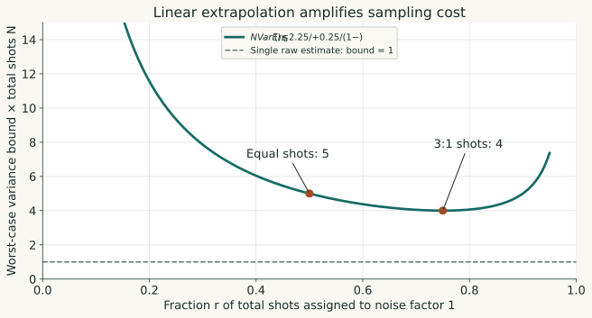

实验：有限样本、外推代价、统计重采样与编译等价性
配套第 15 章（并衔接第 08 章误差缓解与第 14 章编译验证）。本页采用预设合成计数与确定性固定种子算例来演示统计方法，而非真机采集数据。先在草稿纸上独立计算，再在仓库根目录运行以下三份纯 Python 3.9+ 标准库程序（无第三方依赖，切勿附加 -O 关闭断言）：
python3 codes/practice/experiments.py
python3 codes/practice/research_checks.py
python3 codes/practice/v4_practice_lab.py
其中基础统计程序（输出见固定结果）对应 P15-A 至 P15-C，研究边界核验程序（输出见研究边界结果）对应 P15-D 至 P15-G，进阶统计与等价性核验程序对应 P15-H 至 P15-K（ZNE 固定总 shots 最优分配、BCa / Cluster Bootstrap、零失败崩溃反例、少聚类 覆盖率与 QCEC 随机态探针）。
P15-A：同一个 Bell 点估计，为什么下界不同？
题目
三组测量分别为 ，每次读出两比特乘积 或 。第一份数据的 是 。第二份只有中间一组改为 。分别求 Bell 重叠点估计及至少 95% 覆盖的保守下界。
从原始计数开始
每组相关量为 ，因此两份数据都给出 。Bell 投影展开是
注意负号来自投影展开；不能因为 的观测本来为负而再丢掉公式中的负号。
把每组自己的样本量代入
每组样本独立且有同一个期望时，取整体失败概率 ，给各组分配 。Hoeffding 界和并合界给
第一份三个误差半径都是 ，下界 。第二份中 ，半径变为 ，下界降到 。两者仍高于 ，但证据余量不同。若错误地把第二份也按每组 1000 次算，就虚构了不存在的精度。
程序独立从计数重算每个分母，并断言第二份下界更低。此结论还要求三组对应同一稳定制备态、测量实现可信；并合界不需要三组事件互相独立，但每组内部的 Hoeffding 假设仍需成立。漂移、校准误差和事后挑选数据不会因增加采样次数（shots）自动消失。
P15-B：为什么外推到 1.10 不代表测出了超物理态？
题目
把噪声强度缩放为 ，得到 Pauli 期望估计 。用一次多项式外推到零噪声。总预算为 4000 shots，比较均分和 3:1 分配的最坏抽样方差上界。
先算外推权重
假设这段噪声范围内 。由
消去 ，得到 。于是估计器为 。它是带负权重的统计外推，不是另一个物理态直接测得的精确 Pauli 期望。将结果硬裁剪为 1 会改变偏差和区间性质，不能静默处理。
固定总 shots 才能比较代价
对 输出，独立均值的方差不超过 。若两组独立，则
均分时 ，上界是 。如果令 、，需要最小化 。求导为 ，解得 。
因此分配为 3000 和 1000 次，上界变为 。它仍是单个未缓解估计器最坏上界 的 4 倍；均分时则为 5 倍。这里说的是相同总预算下的最坏方差上界，不是所有实验实测方差都固定增加 4 倍，也不是均方误差必然更差：偏差是否降低要另行验证。


放大查看 ↗线性模型若失效、噪声缩放改变了错误种类，哪怕抽样方差很小也会出现模型偏差。可增加中间缩放点作留出诊断，但不要在同一数据上挑“最接近理想值”的模型后还沿用未挑选时的区间。
上图由绘图程序直接计算，绘图依赖见依赖清单。误差缓解工程实现可对照 Mitiq 原始软件论文及源码索引，本算例只实现线性外推的代数与代价。
P15-C：做二十次检验，再挑显著的一次
题目
假设有 20 个互相独立的检验，每个真零假设下的假阳性概率恰为 0.05。至少一次假阳性的概率是多少？若要把整体假阳性控制在至多 0.05，可如何分配阈值？
详解
一次“不误报”的概率是 。独立时二十次都不误报的概率为 ，所以至少一次误报为
这不是量子设备的特殊现象；反复换种子、换后选择阈值、换观测量也会产生类似选择问题。若检验相关，上式不再精确。
不依赖检验间独立性的简单办法是 Bonferroni 分配：每个检验使用 ，由并合界整体不超过 。代价是检验可能较保守。这里的保证还要求每个检验本身有效，不能弥补数据泄漏或随结果改假设。
扩展练习：预先固定一批开发数据选择编译器参数，另留一批未使用的数据作最终比较，并分别记录预算。详解要点是“参数选择”和“最终报告”使用不同数据；这解决部分选择偏差，不证明设备不存在漂移。
P15-D：后选择更准确，为什么每次尝试反而更少成功？
题目与原始样本
下表是人为构造的任务计数，成功判据在采集前固定；“正确”只在已接受的结果中统计。它用于演示条件概率，不代表某个芯片的性能。
| 方法 | 原始尝试 | 被接受 | 接受且正确 |
|---|---|---|---|
| A | 1000 | 800 | 720 |
| B | 1000 | 250 | 240 |
分别求接受率、接受后的正确率、每次原始尝试交付正确结果的频率。若所有尝试均为 10 ms、没有并行或额外启动开销，哪一种方法单位时间交付的正确结果更多？
逐步答案
A 的接受率为 ，条件正确率为 ，联合频率为 。B 对应为 。条件正确率提高了，接受率却大幅下降。
这里不需要假设“接受”和“正确”独立。直接按条件概率恒等式，
每秒 100 次尝试时，两组样本对应 72 与 24 个正确结果每秒。若任务要求接受后的正确率至少为 95%，A 在点估计层面尚未满足，B 才有进一步评估资格；不能仅凭吞吐量宣布 A 更适合。实际验收还要给条件正确率的置信下界，尤其 B 的有效样本仅 250 个。
后选择可能本来就是协议定义的一部分，例如先兆纠缠生成。问题不在于“是否允许丢弃”，而在于事先规定接受规则、保存被丢弃的次数，并同时报告质量和交付率。把接受后的计数当成原始 shots，会在统计和成本两方面同时失真。
P15-E：一千次零失败，不等于错误率为零
题目
独立重复同一操作 次，未发现任何失败。假设每次失败概率都是同一个 ，求单侧 95% 精确二项上界。若希望在“零失败”结果出现时，上界不超过 ，至少应事先安排多少次测试？
从事件概率反解参数
零失败事件的概率为 。把该概率设为显著性水平 ，解出临界参数：
代入 得 ，约 0.299%。这是一套重复实验意义下的上界规则，不是给未知固定参数 分配“95% 的后验概率”。精确二项法允许覆盖率高于名义值，离散计数通常使它较保守；方法定义见 NIST 精确二项区间说明（访问 2026-09-26）。
要求 ，先移项，再注意分母是负数：
因此最小整数是 。这个设计只说明“若这 2995 次恰好零失败，可以得到指定上界”；它不保证实验一定零失败。若发生失败，要使用对应失败计数的完整二项反演。
 放大查看 ↗
放大查看 ↗代码还对 的全部 21 种失败计数构造上界，再枚举 201 个真实概率点的覆盖率。网格检查能发现实现错误，覆盖定理仍来自二项检验反演，不能由有限网格代替。反复测试直到出现好看的“连续零失败”区间，再套固定 公式，不满足本题的预先固定抽样设计；漂移和相关失败也要另建模型。
P15-F：每个 shot 耗时不同，最优预算怎样变？
题目
仍取线性外推权重 。两种线路每个 shot 的成本分别为 个时间单位，总预算 。忽略启动、通信与并行，独立 结果的方差用最坏上界 1。均分 shots 和时间约束下的最佳分配各是多少？
先写约束，再优化
固定总时间要求 ，并非固定 。由柯西—施瓦茨不等式，
等号在 时成立。因此 ，结合 得 。方差上界为
均分 shots 时必须是 ，方差上界 。P15-B 的 3:1 配比针对每个 shot 成本相同，不能照搬到这里。若已知各组单次标准差 ，相同推导给 ；实际需考虑整数取整和用于估计方差的先导样本预算。
P15-G：负权重不是负概率，线路切割的代价怎样算？
题目
设目标期望写成 ，其中 ，；每个可运行实验返回 。设计合法随机抽样和无偏估计器，并精确算单次方差。这两项仅作统计估计教学示例，并非某个具体量子门的物理分解。
把抽样概率与结果权重分开
先取 。以 抽取实验，即概率 ，再运行选中的实验。记录带符号的数值
才是真正抽样概率，不能拿负的 作概率。逐项取期望得
本例每次 ，故 。独立重复 次后样本均值方差是 ，一般上界是 。这一结论描述抽样代价，不包含物理分解误差、执行噪声或模型偏差。代码枚举所有四种“选实验＋结果”分支复算，而非只代入最终公式。
与真实线路切割连接
线路切割用局部可执行操作的准概率组合重构目标统计量。原始研究中的单个 CNOT/CZ 分解在其指定操作模型中给出 ，相应最坏抽样界系数为 9。若采用逐门独立的乘积分解， 个这样的切口给系数 ，两个是 81，四个是 6561。它不是所有切割方案的普适下界；联合多门分解研究讨论了改变分解方式后降低开销的条件（两项来源访问 2026-09-26）。
 放大查看 ↗
放大查看 ↗切割减少单次所需硬件规模，却引入更多子实验和经典重构；它没有自动建立跨芯片纠缠链路。实际工程实现可对照开源实现的逐步阅读路线与本地 cutting 摘录，本题则聚焦统计估计器的无偏性与方差核算。
四组练习的代码、结果与绘图
运行 python3 codes/practice/research_checks.py，查看源程序及固定结果。无第三方依赖、无随机采样，输入均已列在题目和输出中。两张图由生成程序计算，使用与已有科学图相同的绘图依赖。
P15-H：ZNE 固定总 shots 最优分配与指数偏差
配套进阶统计与等价性核验程序（运行 python3 codes/practice/v4_practice_lab.py，纯 Python 3 标准库、固定种子 20261125）。
题目
把零噪声外推的噪声缩放点分别选为两点 、两点 与三点 Richardson 。假设每次独立测量返回 （单次方差上界 ），比较“每档各采 次”与“固定总预算 次（均分 vs Cauchy–Schwarz 最优配比）”下的最坏抽样方差上界倍率；再在指数衰减曲线 上对照外推残余偏差与单比特退极化（）PEC 因子。
逐步核算与程序断言
由拉格朗日插值在 处的权重公式 ，固定总 shots 时，均分（）的方差上界放大倍率为 ，而按 分配时的最小方差上界放大倍率为 ：
| ZNE 方案与缩放点 | 外推权重 | 每档等量 发倍率 | 固定总 shots 均分倍率 | 固定总 shots 最优配比与倍率 |
|---|---|---|---|---|
| 两点线性 | 配比， | |||
两点线性 （见 P15-B） |
配比， | |||
| 三点 Richardson | 配比， |
脚本以总预算 直接回代 交叉断言。在指数噪声曲线 （理想值 ）上，原始偏差 0.139292 经两点线性外推降至 0.019402，三点 Richardson 再降至 0.002703——可见高阶外推压低偏差的同时，方差倍率已从 跳升至 ；而在 单比特退极化下，单门 PEC 因子 ，百层累积放大可达 。
P15-I：BCa / Cluster Bootstrap 与 零失败崩溃反例
题目
针对四类高频实验数据，判断何时该用 Wilson / Clopper–Pearson、何时该用 BCa Bootstrap 或 Cluster Bootstrap，并用 v4_practice_lab.py 逐项验证：
- 低概率二元比例（， 与 ）：比较 Wald 区间与 Wilson 区间的精确二项覆盖率；
- 零失败边界（）：检验朴素有放回 Bootstrap、Wald、Wilson 与单侧 Clopper–Pearson 各自给出什么区间；
- 非线性观测量：沿用
P15-A三基计数 、、，对根保真度 比较 次百分位 Bootstrap、BCa Bootstrap（带中位偏移 与留一 Jackknife 加速系数 ）与 Hoeffding 保守下界； - 10 批时间漂移序列（每批 200 次，计数
[110, 109, 106, 111, 95, 106, 120, 133, 117, 127]）：对照 Pearson 、朴素标准误、聚类标准误与整簇 Cluster Bootstrap。
逐步结果与防踩坑结论
- 低概率与 边界崩溃反例：在 下，名义 95% Wald 区间精确覆盖率在 跌至
87.75%，在 跌至80.22%（Wilson 保持 ）。当 时，原始样本全为0，朴素 Bootstrap 每次重抽依然全为0，区间与 Wald 一起崩溃成[0.0, 0.0]；此时必须坚持 Wilson（双侧上界0.003827）或 Clopper–Pearson（单侧 95% 上界0.002991）。 - 非线性根保真度 BCa 区间：固定种子
20261125复算得 ，95% 百分位 Bootstrap 为[0.8000, 0.8270]，95% BCa Bootstrap 修正非线性开方偏态后为[0.7997, 0.8267]，均远比无分布假设 Hoeffding 保守下界0.7675紧凑且稳稳高于纠缠门槛 。 - 分批漂移与整簇重采样：10 批数据的齐性检验给出 （显著拒绝概率恒定）；误把 2000 次当独立样本算出朴素标准误
0.01108，而按 10 批计算的聚类标准误高达0.01756（放大 1.59 倍），整簇 Cluster Bootstrap 标准误0.01676同样准确捕捉了批间漂移方差。
P15-J：少聚类自由度 覆盖率检验与 Holm / BH-FDR 多重比较
题目
当实验只有 或 个独立时间块（或独立随机化电路聚类）时，若仍直接把聚类标准误乘正态分位数 构造名义 95% 置信区间，真实覆盖率会跌到多少？改用自由度 的学生 分位数 后覆盖率如何变化？再对五项排序后的 值 [0.008, 0.011, 0.025, 0.042, 0.210]（）比较 Bonferroni、Holm–Bonferroni 与 BH-FDR 的拒绝个数。
逐步核算与蒙特卡洛断言
进阶统计与等价性核验程序用纯标准库复合 Simpson 积分精确解出 （相对 加宽 ）与 （加宽 ），并在固定种子下执行 次蒙特卡洛覆盖率试验：
| 聚类数 | 自由度 | 精确临界值 | 误用正态 1.96 覆盖率 |
改用学生 覆盖率 |
|---|---|---|---|---|
| 4 | 3 | 3.1824 |
84.86%（严重欠覆盖） |
94.72% |
| 10 | 9 | 2.2622 |
91.51%（明显欠覆盖） |
94.81% |
五项多重比较的逐步核算如下（）：
- Bonferroni（统一门槛 ）：仅拒绝第 1 项（
0.008），共 1 项； - Holm–Bonferroni（门槛依次 ）：前两项
0.008 <= 0.010、0.011 <= 0.0125拒绝，第 3 项0.025 > 0.0167停止，共 2 项（同样控制家族错误率 FWER 且检验力严格优于 Bonferroni）； - BH-FDR（门槛依次 ）：最大满足下标 （
0.025 <= 0.030），共拒绝 3 项（控制错误发现率而非零假阳性）。
P15-K： 张量切片引擎与编译等价性验证（QCEC 第一层探针）
题目
在 3 比特线性链 0–1–2 上编译远程门 ：合法编译电路 先做最近邻 再做 ，并附带无关全局相位 与末态逻辑—物理布局 (q0→1, q1→0, q2→2)；错误编译电路 把路由后的控制与目标写反为 。如何避免构造 稠密矩阵，用随机单比特乘积纯态快速完成编译正确性证伪？
实现与验证边界
v4_practice_lab.py 用纯 Python 标准库实现 步长索引单/双比特门作用与测量坍缩（不调用 np.kron），先通过 与坍缩回归，再构造 条随机 3 比特单比特乘积纯态探针，将编译输出按末态布局 (1, 0, 2) 置换回逻辑比特序后计算根保真度 （天然忽略全局相位 ）：
- 合法编译电路 ：全部 16 条随机探针的最大不保真度仅 （ 断言通过）；
- 错误编译电路 ：16/16 条随机探针全部瞬间检出偏差，无需枚举全部 个计算基即可在毫秒级捕获路由错位或方向写反缺陷。
随机态探针属于快速证伪层（第一层）：检出差异即可立即确证编译错误，但 16 条探针全部通过仍不能替代对全希尔伯特空间的形式化证明。工业级编译等价性验证（如 MQT QCEC）会将随机探针与量子多值决策图（Alternating DD）及 ZX 演算并行编排，同时须留意一般线路等价性验证在最坏情形下属于 -完全问题（详见第 15 章 §4.4）。